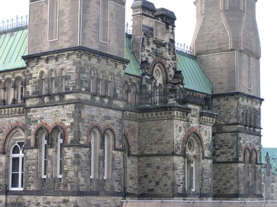
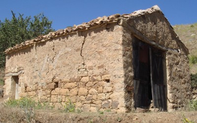
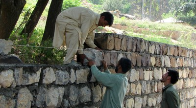
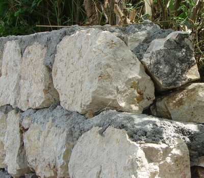
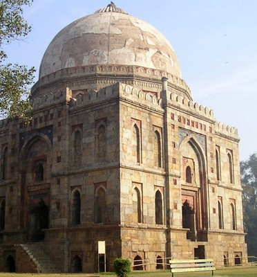
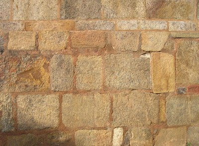
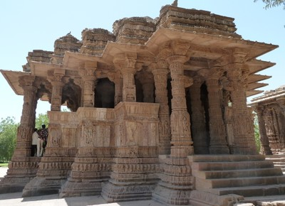

Sandstone [SPSA]
Sandstone is a sedimentary rock formed of sand grains typically (1/16 to 2 mm in diameter) that are cemented together. Sand-sized particles are generally composed of other rocks and minerals, such as feldspar, quartz, rock fragments, and clay. The material cementing the sand grains can be silica, calcium carbonate, or iron oxides. Depending on the composition of the sands and cement, the hardness of sandstone can vary. Sandstone can be a variety of colours, but are typically grey, brown, yellow, and sometimes red, green, or white.

A two-storey sandstone masonry building, West Cyprus (A. Pomonis)


Exterior walls built in Nepean sandstone, National Parliament Building Complex, Ottawa, Canada (Ojdrovic Engineering)

Sandstone masonry walls in Ben-Daoud damaged in the 2010 earthquake, Algeria (M. Farsi)

Sandstone masonry walls with timber reinforcement in Beni-Ourtilane damaged in the 2000 earthquake (M. Farsi)


Sandstone walls under construction, Pakistan (M.M. Rafi)

Sandstone masonry construction, Bara Gumbad Mosque, New Delhi, India (S. Brzev)

Sandstone construction, Sun Temple, Modhera, Gujarat, India (S. Brzev)

Sandstone exterior wall, Chile (S. Brzev)